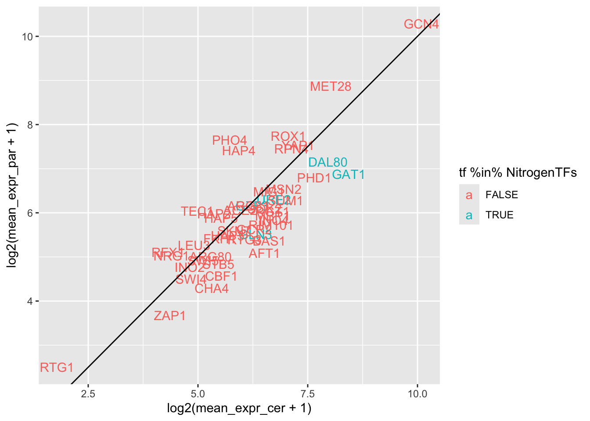

Fig_TFdel
sapply(c("dplyr", "readr", "tidyr", "purrr", "ggplot2", "ggpubr", "matrixStats", "ComplexHeatmap", "circlize", "ggVennDiagram"), require, character.only=TRUE)## dplyr readr tidyr purrr
## TRUE TRUE TRUE TRUE
## ggplot2 ggpubr matrixStats ComplexHeatmap
## TRUE TRUE TRUE TRUE
## circlize ggVennDiagram
## TRUE TRUEload("data_files/CleanedCounts.RData")
load("data_files/DESeq2.RData")
load("data_files/GeneDataFrame.RData")
sgd_lookup <- read_delim("data_files/downloaded_genomes_and_features/SGD_features.tab", delim = "\t", col_names = FALSE) |> filter(X2 == "ORF") |>
select(X4, X5) |>
dplyr::rename("gene_name"="X4",
"common_name"="X5")## Rows: 16454 Columns: 16
## ── Column specification ──────────────────────────────────────────────────
## Delimiter: "\t"
## chr (12): X1, X2, X3, X4, X5, X6, X7, X8, X9, X12, X15, X16
## dbl (3): X10, X11, X13
## date (1): X14
##
## ℹ Use `spec()` to retrieve the full column specification for this data.
## ℹ Specify the column types or set `show_col_types = FALSE` to quiet this message.FullTFnames <- setdiff(unique(gsub("delete", "", sample_info$genotype)), "WT")
NitrogenTFs <- c("URE2", "GAT1", "GLN3", "DAL80", "GZF3")
# ordering TFnames so that nitrogen comes first then alphabetical
TFnames <- c(NitrogenTFs, sort(setdiff(FullTFnames, NitrogenTFs)))
p_thresh <- 0.05 # because DESeq2 already corrected for FDR with alpha = 0.05
eff_thresh <- 1
TFdel_lookup <- read_delim("data_files/downloaded_genomes_and_features/yeastract_46TFs.csv", col_names = FALSE, col_select = c(1,2), delim = ";") # gets some warnings, but so far has been fine## Rows: 46 Columns: 2
## ── Column specification ──────────────────────────────────────────────────
## Delimiter: ";"
## chr (2): X1, X2
##
## ℹ Use `spec()` to retrieve the full column specification for this data.
## ℹ Specify the column types or set `show_col_types = FALSE` to quiet this message.colnames(TFdel_lookup) <- c("common", "systematic")Which TFs are differentially expressed between species?
Even though this is only using WT data, this is more relevant to the TFdels, so we’ll start with this. Mean expression in Scer vs Spar, averaged across timepoints and replicates. Error bars are standard error from replicates.
# scatter plot Scer vs Spar with geom_text as the TF names (b/c the heatmap was only useful when there was more than one environment)
plotdf <- tibble(tf = TFnames) |>
left_join(y = sgd_lookup,
by = c("tf"="common_name"))
plotdf$mean_expr_cer <- map(plotdf$gene_name, \(g) {
expr_vec <- NA
if (g %in% rownames(counts)) {
expr_vec <- counts[g, sample_info$genotype == "WT" &
sample_info$organism == "cer"] |>
as.numeric()
}
return(mean(expr_vec))
}) |> unlist()
plotdf$mean_expr_par <- map(plotdf$gene_name, \(g) {
expr_vec <- NA
if (g %in% rownames(counts)) {
expr_vec <- counts[g, sample_info$genotype == "WT" &
sample_info$organism == "par"] |>
as.numeric()
}
return(mean(expr_vec))
}) |> unlist()
print(ggplot(plotdf, aes(x = log2(mean_expr_cer + 1),
y = log2(mean_expr_par + 1))) +
geom_text(aes(label = tf, color = tf %in% NitrogenTFs)) +
geom_abline(slope = 1, intercept = 0))## Warning: Removed 1 row containing missing values or values outside the scale range
## (`geom_text()`).
How many genes does each TFdel affect in each species?
Barplots of nGenes up or down in response to each TF deletion.
If we only consider a TF effect shared if it affects the same gene in multiple yeasts and occurs at the same timepoint and direction:
plotdf <- TFdeldf |> filter(padj < p_thresh &
abs(lfc) > eff_thresh) |>
mutate(lfc_sign = sign(lfc)) |>
select(gene_name, deletion, organism, timepoint, lfc_sign) |>
group_by(gene_name, deletion, timepoint, lfc_sign) |>
summarise(orgs = list(organism))## `summarise()` has grouped output by 'gene_name', 'deletion', 'timepoint'.
## You can override using the `.groups` argument.cat("Fraction of single-yeast effects:", sum(sapply(plotdf$orgs, length) == 1), "/", nrow(plotdf),
"(", sum(sapply(plotdf$orgs, length) == 1)/nrow(plotdf), "%)", "\n")## Fraction of single-yeast effects: 33782 / 47512 ( 0.7110204 %)If we instead consider a TF effect shared if it affects the same gene in multiple yeasts in the same direciton, but occurs at any timepoint:
plotdf <- TFdeldf |> filter(padj < p_thresh &
abs(lfc) > eff_thresh) |>
mutate(lfc_sign = sign(lfc)) |>
select(gene_name, deletion, organism, lfc_sign) |>
#unique() |> # unique stops double-counting of gene-deletion-lfc_sign combos that affect multiple timepoints, but that currently results in single-species effects becoming a larger portion of the total effects than the timepoint-specific chunk above, which is counterintuitive so commenting it for now
group_by(gene_name, deletion, lfc_sign) |>
summarise(orgs = list(organism))## `summarise()` has grouped output by 'gene_name', 'deletion'. You can
## override using the `.groups` argument.cat("Fraction of single-yeast effects:", sum(sapply(plotdf$orgs, length) == 1), "/", nrow(plotdf),
"(", sum(sapply(plotdf$orgs, length) == 1)/nrow(plotdf), "%)", "\n")## Fraction of single-yeast effects: 27143 / 41481 ( 0.6543478 %)That’s not a very big difference, so for now we’ll specify they’re shared if they affect the same TF. Venn diagram makes it even clearer that it doesn’t matter so we might as well choose the loosest, simplest definition:
sigdf <- filter(TFdeldf, padj < p_thresh & abs(lfc) > eff_thresh & organism == allele)
plotdf <- sigdf |> filter(organism == allele)
# TF-gene combo is shared:
ggVennDiagram(list(Scer = paste(plotdf$gene_name[plotdf$organism == "cer"],
plotdf$deletion[plotdf$organism == "cer"], sep = "_"),
Spar = paste(plotdf$gene_name[plotdf$organism == "par"],
plotdf$deletion[plotdf$organism == "par"], sep = "_"),
Hyb = paste(plotdf$gene_name[plotdf$organism == "hyb"],
plotdf$deletion[plotdf$organism == "hyb"], sep = "_"))) +
scale_fill_gradient(low="grey90",high = "red") +
ggtitle("TF-gene combination is shared")
# TF-gene-direction combo is shared:
ggVennDiagram(list(Scer = paste(plotdf$gene_name[plotdf$organism == "cer"],
plotdf$deletion[plotdf$organism == "cer"],
sign(plotdf$lfc)[plotdf$organism == "cer"], sep = "_"),
Spar = paste(plotdf$gene_name[plotdf$organism == "par"],
plotdf$deletion[plotdf$organism == "par"],
sign(plotdf$lfc)[plotdf$organism == "par"], sep = "_"),
Hyb = paste(plotdf$gene_name[plotdf$organism == "hyb"],
plotdf$deletion[plotdf$organism == "hyb"],
sign(plotdf$lfc)[plotdf$organism == "hyb"], sep = "_"))) +
scale_fill_gradient(low="grey90",high = "red") +
ggtitle("TF-gene-direction combination is shared")
# TF-gene-direction-timepoint combo is shared:
ggVennDiagram(list(Scer = paste(plotdf$gene_name[plotdf$organism == "cer"],
plotdf$deletion[plotdf$organism == "cer"],
sign(plotdf$lfc)[plotdf$organism == "cer"],
plotdf$timepoint[plotdf$organism == "cer"], sep = "_"),
Spar = paste(plotdf$gene_name[plotdf$organism == "par"],
plotdf$deletion[plotdf$organism == "par"],
sign(plotdf$lfc)[plotdf$organism == "par"],
plotdf$timepoint[plotdf$organism == "par"], sep = "_"),
Hyb = paste(plotdf$gene_name[plotdf$organism == "hyb"],
plotdf$deletion[plotdf$organism == "hyb"],
sign(plotdf$lfc)[plotdf$organism == "hyb"],
plotdf$timepoint[plotdf$organism == "hyb"], sep = "_"))) +
scale_fill_gradient(low="grey90",high = "red") +
ggtitle("TF-gene-direction-timepoint combination is shared")
plotBarplot <- function(.updf, .downdf, .title) {
p <- ggplot() +
geom_histogram(data = .updf,
aes(x = factor(deletion,
levels = TFnames),
y = after_stat(count),
fill = deletion), stat = "count") +
geom_histogram(data = .downdf,
aes(x = factor(deletion,
levels = TFnames),
y = -after_stat(count),
fill = deletion), stat = "count") +
geom_hline(yintercept = 0) +
scale_x_discrete(limits = TFnames,
breaks = TFnames) +
theme_classic() +
theme(legend.position = "none", axis.text.x = element_text(angle = 90, hjust = 1, vjust = 0.5)) +
xlab("") +
ylab("number of DE genes") +
ggtitle(.title)
return(p)
}
plotdf <- sigdf |>
mutate(lfc_sign = sign(lfc)) |>
select(gene_name, deletion, organism, lfc_sign) |>
group_by(gene_name, deletion) |>
summarise(orgs = list(organism),
lfc_sign = unique(lfc_sign))## `summarise()` has grouped output by 'gene_name', 'deletion'. You can
## override using the `.groups` argument.checkOrgs <- function(.query, .orgs, .excludeOthers = FALSE) {
if (!.excludeOthers) {
return(all(.query %in% unlist(.orgs)))
}
if (.excludeOthers) {
#cat("performing setequal on\n", unique(unlist(.query)), "\n and\n",
#unique(unlist(.orgs)), "\nwith lengths", length(.query), "and", length(.orgs))
return(setequal(x = c(unlist(.query)), y = c(unlist(.orgs))))
}
}
# tests for checkOrgs
test <- filter(plotdf, checkOrgs(.query = list("cer", "par"),
.orgs = orgs,
.excludeOthers = FALSE))
test |> filter(gene_name == "YMR242C" & deletion == "BAS1" & lfc_sign == -1) # should be present## # A tibble: 1 × 4
## # Groups: gene_name, deletion [1]
## gene_name deletion orgs lfc_sign
## <chr> <chr> <list> <dbl>
## 1 YMR242C BAS1 <chr [5]> -1table(unlist(test$orgs)) # can have hyb##
## cer hyb par
## 3072 1182 3325test <- filter(plotdf, checkOrgs(.query = list("cer", "par"),
.orgs = orgs,
.excludeOthers = TRUE)) |>
select(gene_name, deletion) |> unique()
table(unlist(test$orgs)) # shouldn't have any hyb## < table of extent 0 >nrow(test) # should have same nrow as Scer-Spar exclusive ring of Venn## [1] 1486# nEffects that are shared between all three yeasts:
filter(plotdf, checkOrgs(.query = list("cer", "hyb", "par"),
.orgs = orgs, .excludeOthers = TRUE)) |>
select(gene_name, deletion) |> unique() # should be same nrow as Venn center count## # A tibble: 648 × 2
## # Groups: gene_name, deletion [648]
## gene_name deletion
## <chr> <chr>
## 1 YAL005C INO4
## 2 YAL012W MET28
## 3 YAL022C SUM1
## 4 YAL038W GCR2
## 5 YAL060W GCR2
## 6 YAL062W DAL80
## 7 YAL067C MET28
## 8 YAR015W URE2
## 9 YBL002W ROX1
## 10 YBL021C HAP3
## # ℹ 638 more rowsmax_nDE <- sigdf |> mutate(lfc_sign = sign(lfc)) |>
select(deletion, organism, gene_name, lfc_sign) |>
unique() |> group_by(deletion, organism, lfc_sign) |> summarise(n = n()) |>
select(n) |> pull() |> max()## `summarise()` has grouped output by 'deletion', 'organism'. You can
## override using the `.groups` argument.
## Adding missing grouping variables: `deletion`, `organism`ylims_unique <- c(-max_nDE+10, max_nDE-10)
ylims_shared <- c(-100, 100)
# Scer unique
plotdf_cer <- filter(plotdf, checkOrgs(.query = list("cer"),
.orgs = orgs,
.excludeOthers = TRUE))
plotdf_cer_up <- filter(plotdf_cer, lfc_sign == 1)
plotdf_cer_down <- filter(plotdf_cer, lfc_sign == -1)
plotBarplot(.updf = plotdf_cer_up,
.downdf = plotdf_cer_down,
.title = "S. cer unique") +
ylim(ylims_unique)
# Spar unique
plotdf_par <- filter(plotdf, checkOrgs(.query = list("par"),
.orgs = orgs,
.excludeOthers = TRUE))
plotdf_par_up <- filter(plotdf_par, lfc_sign == 1)
plotdf_par_down <- filter(plotdf_par, lfc_sign == -1)
plotBarplot(.updf = plotdf_par_up,
.downdf = plotdf_par_down,
.title = "S. par unique") +
ylim(ylims_unique)
# Hyb unique
plotdf_hyb <- filter(plotdf, checkOrgs(.query = list("hyb"),
.orgs = orgs,
.excludeOthers = TRUE))
plotdf_hyb_up <- filter(plotdf_hyb, lfc_sign == 1)
plotdf_hyb_down <- filter(plotdf_hyb, lfc_sign == -1)
plotBarplot(.updf = plotdf_hyb_up,
.downdf = plotdf_hyb_down,
.title = "Hybird unique") +
ylim(ylims_unique)
# Scer + Spar shared
plotdf_cerpar <- filter(plotdf, checkOrgs(.query = list("cer", "par"),
.orgs = orgs,
.excludeOthers = TRUE))
plotdf_cerpar_up <- filter(plotdf_cerpar, lfc_sign == 1)
plotdf_cerpar_down <- filter(plotdf_cerpar, lfc_sign == -1)
plotBarplot(.updf = plotdf_cerpar_up,
.downdf = plotdf_cerpar_down,
.title = "S. cer, S. par shared effects") +
ylim(ylims_unique)
# Scer + Hyb shared
plotdf_cerhyb <- filter(plotdf, checkOrgs(.query = list("cer", "hyb"),
.orgs = orgs,
.excludeOthers = TRUE))
plotdf_cerhyb_up <- filter(plotdf_cerhyb, lfc_sign == 1)
plotdf_cerhyb_down <- filter(plotdf_cerhyb, lfc_sign == -1)
plotBarplot(.updf = plotdf_cerhyb_up,
.downdf = plotdf_cerhyb_down,
.title = "S. cer, Hybrid shared effects") +
ylim(ylims_unique)
# Spar + Hyb shared
plotdf_parhyb <- filter(plotdf, checkOrgs(.query = list("par", "hyb"),
.orgs = orgs,
.excludeOthers = TRUE))
plotdf_parhyb_up <- filter(plotdf_parhyb, lfc_sign == 1)
plotdf_parhyb_down <- filter(plotdf_parhyb, lfc_sign == -1)
plotBarplot(.updf = plotdf_parhyb_up,
.downdf = plotdf_parhyb_down,
.title = "S. par, Hybrid shared effects") +
ylim(ylims_unique)
# All 3 shared
plotdf_parhyb <- filter(plotdf, checkOrgs(.query = list("cer", "par", "hyb"),
.orgs = orgs,
.excludeOthers = TRUE))
plotdf_parhyb_up <- filter(plotdf_parhyb, lfc_sign == 1)
plotdf_parhyb_down <- filter(plotdf_parhyb, lfc_sign == -1)
plotBarplot(.updf = plotdf_parhyb_up,
.downdf = plotdf_parhyb_down,
.title = "S.cer, S. par, and Hybrid shared effects") +
ylim(ylims_unique) Sanity check: all the HAPS have more negative lfcs in hybrid-unique
effects and hyb-par effects?
Sanity check: all the HAPS have more negative lfcs in hybrid-unique
effects and hyb-par effects?
sigdf |> filter(grepl("HAP", deletion)) |> mutate(lfc_sign = sign(lfc)) |>
select(organism, lfc_sign) |> table()## lfc_sign
## organism -1 1
## cer 438 44
## hyb 2566 593
## par 1171 155Second sanity check: MET28 has the most fully conserved
sigdf |>
mutate(lfc_sign = sign(lfc)) |>
select(gene_name, deletion, organism, lfc_sign) |>
group_by(gene_name, deletion) |>
summarise(orgs = list(organism),
lfc_sign = unique(lfc_sign)) |>
ungroup() |>
filter(all(list("cer", "par", "hyb") %in% unlist(orgs))) |>
select(deletion) |> pull() |> table()## Warning: Returning more (or less) than 1 row per `summarise()` group was
## deprecated in dplyr 1.1.0.
## ℹ Please use `reframe()` instead.
## ℹ When switching from `summarise()` to `reframe()`, remember that
## `reframe()` always returns an ungrouped data frame and adjust
## accordingly.
## Call `lifecycle::last_lifecycle_warnings()` to see where this warning was
## generated.## `summarise()` has grouped output by 'gene_name', 'deletion'. You can
## override using the `.groups` argument.##
## ACE2 AFT1 ARG80 ARG81 BAS1 CBF1 CHA4 DAL80 FKH1 GAT1
## 106 523 627 533 1537 2085 283 273 280 269
## GCN4 GCR2 GLN3 GZF3 HAP1 HAP2 HAP3 HAP4 HAP5 INO2
## 1086 1220 1564 216 379 886 1155 511 812 503
## INO4 LEU3 MBP1 MET28 MIG1 MSN2 NRG1 PHD1 PHO4 RFX1
## 997 92 682 1598 894 388 603 117 1927 119
## RGT1 RIM101 ROX1 RPN4 RTG1 RTG3 SKN7 SOK2 STB5 SUM1
## 469 516 940 1012 288 686 120 384 2213 440
## SWI4 SWI5 TEC1 URE2 YAP1 ZAP1
## 1106 474 408 582 316 432Third sanity check: BAS1/CBF1 have no hybrid-unique effects
test <- sigdf |>
mutate(lfc_sign = sign(lfc)) |>
select(gene_name, deletion, organism) |>
group_by(gene_name, deletion) |>
summarise(orgs = list(organism)) |>
ungroup() |>
filter(deletion %in% c("CBF1", "BAS1")) |>
filter(checkOrgs(.query = list("cer", "par"),
.orgs = orgs, .excludeOthers = FALSE)) |>
select(orgs) |> pull()## `summarise()` has grouped output by 'gene_name'. You can override using
## the `.groups` argument.map(test, \(o) {
return(paste0(sort(unique(unlist(o)))))
}) |> unlist() |> table()##
## cer par
## 2256 1759How many replicates do they have?
sample_info |> filter(genotype %in% c("BAS1delete", "CBF1delete") & organism == "hyb" & allele == "hyb") |> select(time_point_str, genotype) |> table()## genotype
## time_point_str CBF1delete
## 0 h, YPD 1
## 1 h, low N 1
## 16 h, low N 1What percent of divergent vs conserved wildtype nitrogen responses are responding to TF deletions?
sigdf <- TFdeldf |> filter(padj < p_thresh & abs(lfc) > eff_thresh)
genedf$sig <- genedf$gene_name %in% sigdf$gene_name
table(genedf$sig, genedf$is_conserved_unresponsive)##
## FALSE TRUE
## FALSE 19 170
## TRUE 1219 3951# # tables/heatmaps for TP1 and TP3 of counts of how many genes are affected by each TFdel (either direction) in each species and hybrid alleles
#
# effectsdf <- TFdeldf |>
# filter(timepoint != "TP2") |>
# group_by(deletion, organism, timepoint) |>
# summarise(nGenes = sum(abs(lfc) > eff_thresh &
# padj < p_thresh)) |>
# pivot_wider(id_cols = c("deletion"),
# names_from = c("organism", "timepoint"),
# values_from = "nGenes") |>
# ungroup()
# effects_mat <- select(effectsdf, -deletion) |> as.matrix()
# rownames(effects_mat) <- effectsdf$deletion
#
# # # In case you're curious if there's a relationship to differential expression of TFs between species (there isn't):
# # # ordering by expression difference (lfc) of TFs between species
# # tf_order <- TFdf |> filter(common %in% goodTFs & experiment == "LowN") |>
# # arrange(desc(effect_size_species)) |> select(common) |> pull()
# # tf_order <- c(tf_order, setdiff(goodTFs, tf_order))
# # # or mean expression level (also not related):
# # getMeanExpr <- function(.gene_idx) {
# # return(mean(counts[.gene_idx,]))
# # }
# # tf_order <- TFdf |> filter(common %in% setdiff(goodTFs, "HAP1")) |>
# # select(common, gene_name) |> unique()
# #
# # tf_order$mean_expr <- map(tf_order$gene_name, getMeanExpr) |>
# # unlist()
# # tf_order <- arrange(tf_order, desc(mean_expr)) |> select(common) |> pull()
# # tf_order <- c(tf_order, "HAP1")
# col_fun <- colorRamp2(c(0, 50, 300), c("blue", "yellow", "red"))
# p <- Heatmap(effects_mat, col = col_fun, na_col = "grey80",
# column_order = c("cer_cer_TP1", "par_par_TP1", "cer_cer_TP3", "par_par_TP3",
# "hyb_cer_TP1", "hyb_par_TP1", "hyb_cer_TP3", "hyb_par_TP3"),
# # row_order = tf_order,
# cell_fun = function(j, i, x, y, width, height, fill) {
# output <- if_else(!(is.na(effects_mat[i, j])),
# true = as.character(effects_mat[i, j]),
# false = "-")
# grid.text(output, x, y, gp = gpar(fontsize = 10))
# })
# p
#
# # # version including TP2
# # pdf("../../aligning_the_molecular_phenotype/paper_figures/TFdel/TFdel_heatmap_all3tps.pdf",
# # width = 5, height = 8)
# # Heatmap(effects_mat, col = col_fun, na_col = "grey80",
# # column_order = c("cer_TP1", "par_TP1", "cer_TP2", "par_TP2", "cer_TP3", "par_TP3",
# # "hyc_TP1", "hyp_TP1", "hyc_TP2", "hyp_TP2", "hyc_TP3", "hyp_TP3"),
# # # row_order = tf_order,
# # cell_fun = function(j, i, x, y, width, height, fill) {
# # output <- if_else(!(is.na(effects_mat[i, j])),
# # true = as.character(effects_mat[i, j]),
# # false = "-")
# # grid.text(output, x, y, gp = gpar(fontsize = 10))
# # })
# # dev.off()
#
# ### Repeating with sham, all TFdels were 2 randomly sampled WT replicates
# effectsdf <- TFdeldf_sham1 |> # change to sham2 to see if random sampling matters
# filter(timepoint != "TP2") |>
# group_by(deletion, organism, timepoint) |>
# summarise(nGenes = sum(abs(lfc) > eff_thresh &
# padj < p_thresh)) |>
# pivot_wider(id_cols = c("deletion"),
# names_from = c("organism", "timepoint"),
# values_from = "nGenes") |>
# ungroup()
# effects_mat <- select(effectsdf, -deletion) |> as.matrix()
# rownames(effects_mat) <- effectsdf$deletion
#
# col_fun <- colorRamp2(c(0, 50, 300), c("blue", "yellow", "red"))
# p <- Heatmap(effects_mat, col = col_fun, na_col = "grey80",
# column_order = c("cer_cer_TP1", "par_par_TP1", "cer_cer_TP3", "par_par_TP3",
# "hyb_cer_TP1", "hyb_par_TP1", "hyb_cer_TP3", "hyb_par_TP3"),
# # row_order = tf_order,
# cell_fun = function(j, i, x, y, width, height, fill) {
# output <- if_else(!(is.na(effects_mat[i, j])),
# true = as.character(effects_mat[i, j]),
# false = "-")
# grid.text(output, x, y, gp = gpar(fontsize = 10))
# })
# p
# ```
#
# ## Volcano plots to compare power bwtn species
# ```{r}
# # basic volcano plot to compare power
# makeVolcanoPlot <- function(.tfdeldf, .tf, .org, .timepoint) {
# plotdf <- .tfdeldf |> filter(organism == .org &
# timepoint == .timepoint &
# deletion == .tf)
# ggplot(plotdf, aes(x = lfc, y = -log10(pval))) +
# geom_point(aes(color = padj < p_thresh)) +
# ylim(c(0, 15)) +
# xlim(c(-5, 5))
# }
#
# # At each TP, compare all 4 species with volcano plots
# # One example where Spar has flat pvals:
# makeVolcanoPlot(.tfdeldf = TFdeldf, .tf = "YAP1", .org = "cer", .timepoint = "TP3")
# #makeVolcanoPlot(.tfdeldf = TFdeldf, .tf = "YAP1", .org = "par", .timepoint = "TP3")
# # One example where Scer does:
# #makeVolcanoPlot(.tfdeldf = TFdeldf, .tf = "MET28", .org = "cer", .timepoint = "TP1")
# #makeVolcanoPlot(.tfdeldf = TFdeldf, .tf = "MET28", .org = "par", .timepoint = "TP1")
# # Example where Spar has a ton of TFdel replicates:
# #makeVolcanoPlot(.tfdeldf = TFdeldf, .tf = "HAP5", .org = "cer", .timepoint = "TP1")
# #makeVolcanoPlot(.tfdeldf = TFdeldf, .tf = "HAP5", .org = "par", .timepoint = "TP1")
# #makeVolcanoPlot(.tfdeldf = TFdeldf, .tf = "HAP5", .org = "cer", .timepoint = "TP3")
# #makeVolcanoPlot(.tfdeldf = TFdeldf, .tf = "HAP5", .org = "par", .timepoint = "TP3")
# # Spar has more detected, but Scer does also have a handful of sig (mainly TP3)
# ```
#
# ## Deep dive: URE2, GAT1, and GLN3
# ```{r}
# makeUpsetPlot(.df = filter(TFdeldf, organism == "cer"),
# .group_name = "deletion",
# .group_members = c("GLN3", "GAT1", "URE2"),
# .item_names = "gene_name")
# # also true in par, hyc, hyp, but GAT1 and URE2 just have way fewer single effects and GLN3 has way more:
# makeUpsetPlot(.df = filter(TFdeldf, organism == "par"),
# .group_name = "deletion",
# .group_members = c("GLN3", "GAT1", "URE2"),
# .item_names = "gene_name")
# makeUpsetPlot(.df = filter(TFdeldf, organism == "hyc"),
# .group_name = "deletion",
# .group_members = c("GLN3", "GAT1", "URE2"),
# .item_names = "gene_name")
# makeUpsetPlot(.df = filter(TFdeldf, organism == "hyp"),
# .group_name = "deletion",
# .group_members = c("GLN3", "GAT1", "URE2"),
# .item_names = "gene_name")
# # so Spar's URE2-GAT1-GLN3 environment is dominant in the hybrid.
# # Scer has much higher GAT1 expression, but Spar's GLN3 deletion has more effect
# # Other big difference: Scer has about 50 GAT1-URE2 shared genes, where Spar and hybrid only have 3-5
# # What are these genes?
# cer_tab <- TFdeldf |> filter(deletion %in% c("GAT1", "URE2") &
# organism == "cer") |> select(gene_name) |>
# table() |> sort(decreasing = TRUE)
# cer_genes <- rownames(cer_tab)[cer_tab == 2]
# par_tab <- TFdeldf |> filter(deletion %in% c("GAT1", "URE2") &
# organism == "par") |> select(gene_name) |>
# table() |> sort(decreasing = TRUE)
# par_genes <- rownames(par_tab)[par_tab == 2]
# intersect(cer_genes, par_genes) # DUR12, MEP1, both urea/ammonia enzymes
# # where are they in non-Scer organisms?
# TFdeldf |> filter(gene_name %in% setdiff(cer_genes, par_genes)) |>
# select(deletion, organism) |> table()
# # two conclusions:
# # 1) either both parents have a lot of effects or both hybrid alleles do (GLN3, GCR2, MET28 are exceptions where all 4 have many effects)
# # 2) when there is a stark difference in which TF affects which organism, the Scer parental gene copies are most sensitive (SOK2, STB5, RTG3, URE2, GZF3, GAT1, GCN4, ARG81)
#
# # what clusters are these genes in?
#
# # TODO: b/c we're not doing clustering for this TFdel paper, change to "conserved decreasing" and "conserved increasing" (and maybe a third "uncorrelated" category if you want to use it? Only if it's helpful to provide biological insight with the DALs)
#
# # finaldf |> filter(gene_name %in% setdiff(cer_genes, par_genes)) |>
# # select(cer, par) |> table() # heavily conserved, but even split between 1-1 and 2-2
# # gene_idxs11 <- finaldf |> filter(gene_name %in% setdiff(cer_genes, par_genes) &
# # cer == 1 & par == 1) |> select(gene_name) |> pull()
# # gene_idxs22 <- finaldf |> filter(gene_name %in% setdiff(cer_genes, par_genes) &
# # cer == 2 & par == 2) |> select(gene_name) |> pull()
# # getGOSlimDf(.idxs = gene_idxs11, .group_name = "GAT1_URE2_ScerUnique11")
# # Conserved increasing: 12 catabolic genes (including allatonin degredation genes DALs 1, 2, 4, 7)
# # getGOSlimDf(.idxs = gene_idxs22, .group_name = "GAT1_URE2_ScerUnique22")
# # Conserved decreasing: 18 nucleolus/15 rRNA processing genes, 6 helicase (mainly DEAD box RNA helicases for rRNA processing)
#
# # # What timepoint is the dynamics affected? If this is related to the URE2-GAT1 interaction, we'd expect the LowN timepoint
# # # 1-1
# # plotGenesTFdel(.gene_idxs = gene_idxs11, .tf = "GAT1") # yes later timepoint, mainly Scer but a little Spar
# # plotGenesTFdel(.gene_idxs = gene_idxs11, .tf = "URE2") # both timepoints, just Scer
# # # what about hybrid?
# # plotGenesTFdel(.gene_idxs = gene_idxs11, .tf = "GAT1", .parents_or_hybrid = "hybrid")
# # plotGenesTFdel(.gene_idxs = gene_idxs11, .tf = "URE2", .parents_or_hybrid = "hybrid")
# # # Interestingly there is an effect at the early timepoint in both hybrid alleles. Why weren't they flagged as dynamic effects?
# # effectsdf |> filter(organism %in% c("hyc", "hyp") &
# # deletion %in% c("GAT1", "URE2") &
# # gene_name %in% gene_idxs11) |> select(effect, deletion) |> table()
# # # They're all URE2 only, but there is a slight effect in GAT1
# # TFdeldf |> filter(organism %in% c("hyc", "hyp") &
# # deletion == "GAT1" &
# # timepoint == "TP1" &
# # gene_name %in% gene_idxs11) |>
# # arrange(desc(lfc)) # Only enough power to detect a couple, namely the very classy haze protective factor HPF1, which reduces cloudiness in white wines
# # # But it's not just HPF1/YOL155C causing this -- most hybrid orthologs are up decently in URE2, just without significant pvalues
# #
# # # 2-2
# # plotGenesTFdel(.gene_idxs = gene_idxs22, .tf = "GAT1") # yowza later timepoint, only Scer
# # plotGenesTFdel(.gene_idxs = gene_idxs22, .tf = "URE2") # mostly later timepoint, also yowza, only Scer
# # # hybrid
# # plotGenesTFdel(.gene_idxs = gene_idxs22, .tf = "GAT1", .parents_or_hybrid = "hybrid")
# # plotGenesTFdel(.gene_idxs = gene_idxs22, .tf = "URE2", .parents_or_hybrid = "hybrid")
# # # Here the hybrid effect at TP3 is in the opposite direction (and weaker)
# #
# # # Taking stock: identified ~50 genes that had dynamics affected by both GAT1 and URE2 deletion
# # # in Scer but not in Spar or hybrid alleles
# # # Interesting b/c GAT1 is expressed much higher in Scer (and hyc allele transiently in response to LowN)
# # # These genes are 50-50 split between increasing and decreasing cluster, but they have all conserved dynamics btwn species
# # # GAT1/URE2 deletion affects late timepoint the strongest in Scer, no effect in Spar
# # # in hybrid, there is some evidence of an early timepoint effect---especially URE2 delete on increasing genes
# # # but the late timepoint effect is really only seen in Scer
# #
# # # investigating GAT1 Scer_only regulated genes
# # # first increasing genes
# # gene_idxs_par <- getGeneGroup(.tf = "GAT1", .tp = "TP3", .lfc_sign = 1,
# # .clust = 2, .org = "par")
# # gene_idxs_cer <- getGeneGroup(.tf = "GAT1", .tp = "TP3", .lfc_sign = 1,
# # .clust = 2, .org = "cer")
# # plotdf <- getGroupDf(.tf = "GAT1", .tp = "TP3", .lfc_sign = 1,
# # .clust = 2, .genes_cer = gene_idxs_cer,
# # .genes_par = gene_idxs_par)
# # ggplot(plotdf, aes(x = lfc_cer, y = lfc_par)) +
# # geom_point(aes(color = tf_effect)) +
# # geom_abline(slope = 1, intercept = 0)
# # # Scer-only TF response, conserved dynamics
# # gene_idxs <- plotdf |> filter(tf_effect == "Scer only" & dynamics == "conserved" &
# # par == 2) |>
# # select(gene_name) |> pull()
# # plotGenesTFdel(.tf = "GAT1", .gene_idxs = gene_idxs)
# # plotGenesTFdel(.tf = "GAT1", .gene_idxs = sample(gene_idxs, size = 12), .single_genes = TRUE, .normalization = "scale")
# # # (there are no decreasing genes for this cluster)
# #
# # # investigating GAT1 Scer_only regulated genes
# # # first increasing genes
# # gene_idxs_par <- getGeneGroup(.tf = "GAT1", .tp = "TP3", .lfc_sign = 1,
# # .clust = 1, .org = "par")
# # gene_idxs_cer <- getGeneGroup(.tf = "GAT1", .tp = "TP3", .lfc_sign = 1,
# # .clust = 1, .org = "cer")
# # plotdf <- getGroupDf(.tf = "GAT1", .tp = "TP3", .lfc_sign = 1,
# # .clust = 1, .genes_cer = gene_idxs_cer,
# # .genes_par = gene_idxs_par)
# # ggplot(plotdf, aes(x = lfc_cer, y = lfc_par)) +
# # geom_point(aes(color = tf_effect)) +
# # geom_abline(slope = 1, intercept = 0)
# # # Scer-only TF response, conserved dynamics
# # gene_idxs <- plotdf |> filter(tf_effect == "Scer only" & dynamics == "conserved" &
# # par == 1) |>
# # select(gene_name) |> pull()
# # plotGenesTFdel(.tf = "GAT1", .gene_idxs = gene_idxs)
# # plotGenesTFdel(.tf = "GAT1", .gene_idxs = sample(gene_idxs, size = 12), .single_genes = TRUE, .normalization = "scale")
# # # next decreasing genes
# # gene_idxs_par <- getGeneGroup(.tf = "GAT1", .tp = "TP3", .lfc_sign = -1,
# # .clust = 1, .org = "par")
# # gene_idxs_cer <- getGeneGroup(.tf = "GAT1", .tp = "TP3", .lfc_sign = -1,
# # .clust = 1, .org = "cer")
# # plotdf <- getGroupDf(.tf = "GAT1", .tp = "TP3", .lfc_sign = -1,
# # .clust = 1, .genes_cer = gene_idxs_cer,
# # .genes_par = gene_idxs_par)
# # ggplot(plotdf, aes(x = lfc_cer, y = lfc_par)) +
# # geom_point(aes(color = tf_effect)) +
# # geom_abline(slope = 1, intercept = 0)
# # # Scer-only TF response, conserved dynamics
# # gene_idxs <- plotdf |> filter(tf_effect == "Scer only" & dynamics == "conserved" &
# # par == 1) |>
# # select(gene_name) |> pull()
# # plotGenesTFdel(.tf = "GAT1", .gene_idxs = gene_idxs)
# # plotGenesTFdel(.tf = "GAT1", .gene_idxs = sample(gene_idxs, size = 12), .single_genes = TRUE, .normalization = "scale")